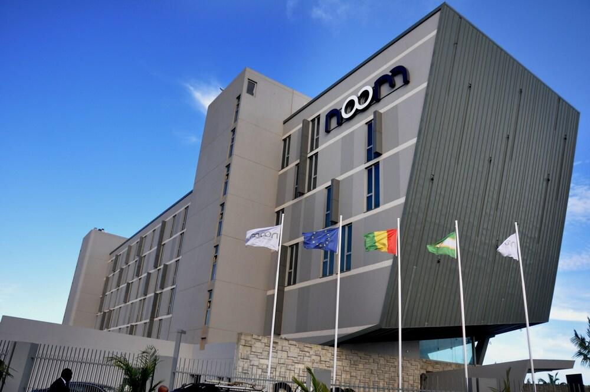
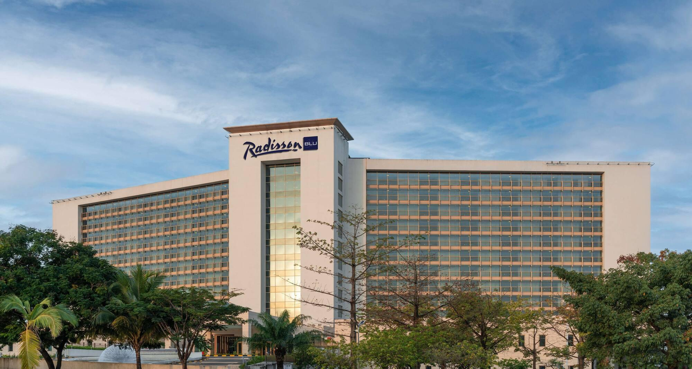
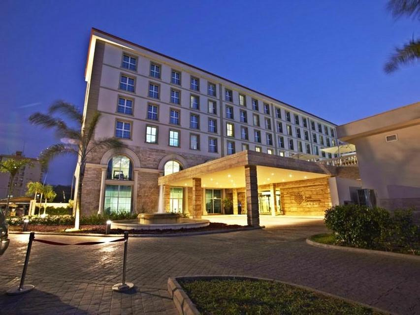
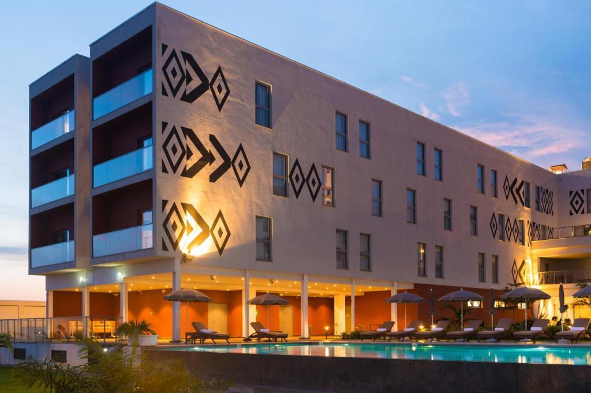

Introduction
Lors d'un voyage en Guinée, il y a plusieurs possibilité de logement a Conacry, ci-dessous il y aura 4 hebergement avec les information nécessaire.
1.Noom Hotel Conakry

- Type: Hôtel 5 étoiles.
- Prix: environ 180 à 300 CHF par nuit.
- Services: piscine, Wi-Fi, restaurant et parking.
- Note: 8,4/10 sur Hotels.com.
- Site web: Noom Hotels
2.Radisson Blu Hotel

- Type: Hôtel 5 étoiles.
- Prix: environ 230 à 350 CHF par nuit.
- Services: piscine, Wi-Fi et salle de sport.
- Note: 9/10 sur Hotels.com.
- Site web: Radisson Hotels
3.Palm Camayenne

- Type: Hôtel.
- Prix: environ 140 à 220 CHF par nuit.
- Services: piscine, Wi-Fi, parking et spa.
- Note: 8,6/10 sur Hotels.com.
- Site web: Palm Camayenne
4.ONOMO Hotel Conakry

- Type: Hôtel.
- Prix: environ 100 à 150 CHF par nuit.
- Services: piscine, Wi-Fi et restaurant.
- Note: 7,6/10 sur Hotels.com.
- Site web: ONOMO Hotels